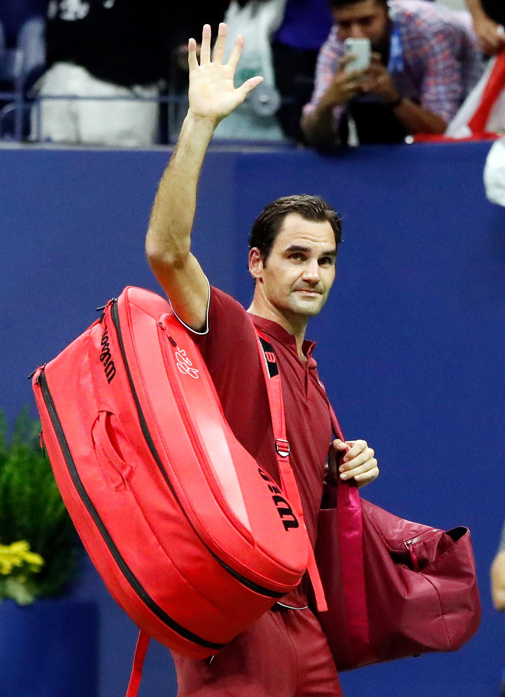
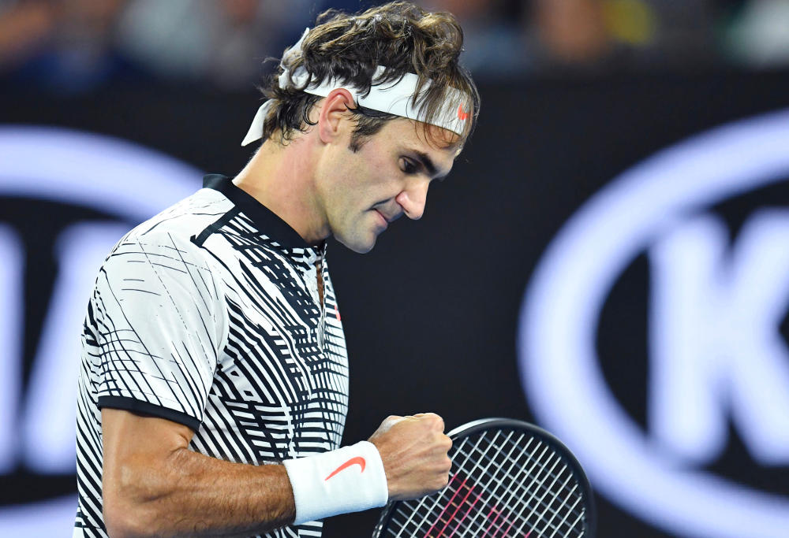

For a brand to be successful, it must actively prove that it is different from the competition in a way that people care about. For a brand to stay successful, it must be ever-alert to changes in its category, in the marketplace, and in what it offers, and be open-minded and agile enough to shift business strategies in order to continue to be different in a way people care about. The best brands know how to spot warning signs that it’s time for reinvention and they figure out what they have to do deliver on it — before it’s too late.
So, Roger Federer. Over his 20-year career he has gone from top of the leaderboard, to seven years of woefully wanting, and, now, at the “advanced age” of 36, back to being virtually unbeatable again. From 2003 to 2010 he won Wimbledon six times, five U.S. Opens, four Australian Opens and one French Open. Over the next six years, he won only one major tournament, that being Wimbledon in 2012. For mere mortals, his performance was outstanding. Then, in January of this year, he overcame his long time nemesis and greatest rival Rafael Nadal to win the Australian Open, beat him twice again in other tournaments, and went on to win Wimbledon in July. He is favored to win the 2017 U.S. Open, this, the world’s largest tennis event, which would make for 20 major wins — so far — in his storied career.
So, what did Federer do, from a brand strategy point of view, to reinvent himself — to go from unbeatable to beatable and back again? He did four things all smart brands do in their quest to take on changes in the marketplace — and in their businesses — in order to successfully shift ahead of the competition.
First, he broke the “golden handcuffs.” This is in reference to the fact that, in the business world, most companies are focused on quarter-to-quarter results. They are afraid to make any move that might upset this quarter’s earnings. They set a short-term target and try to keep Wall Street and stakeholders happy by meeting this short-term target. In the midst of a fast-changing landscape, short-term targets are often short-sighted. Beating the competition over the long run requires bold moves.
Federer made a bold move. He took his game off line for six months to retool. Six months is a long time in the world of tennis. It’s sort of akin to a company taking a year off to retool its strategy. Wall Street gets nervous when this happens. Roger Federer knew that he had to make some personal, and personnel, changes if he wanted to see game changes. In 2105, he replaced coaches to work on one specific stroke, his backhand. The six month layoff gave Federer the opportunity to really alter his back-hand, transforming it from a defensive stroke to an offensive one. Withdrawing from the circuit for several months meant giving up ranking points and prize money, but Federer had his eye on the longer-term prize. The next quarter did not matter to the greatest player the world has ever seen.
Second thing Federer did that smart brands do to stay ahead? He embraced new technology and integrated it into his “go to market” strategy. In this case, the technology was his tennis racket. Needless to say, when you’ve won 17 major tournaments with one specific type of racket, changing the technology can be pretty anxious-making. For years, Federer had resisted the move to a racket with a larger head, equipment used by many of his major rivals. Perhaps it was an acknowledgment of his age. Perhaps it was an acknowledgement that a more extensive surface area provides a larger, more forgiving sweet spot. In any event, in a bow to embracing the new, and the potential for new wins, Federer made the switch. He came to respect the DNA of the game.
The third thing Federer did in his efforts to shift ahead? It’s what I refer to as “see and seize.” Sure, almost all brands can see changes down the road. They’ve got the data dashboards and the focus groups, and such. But, what they don’t have is the cultural wherewithal to move quickly or assuredly enough to seize opportunities. They deliberate and analyze to the point of analysis paralysis. Federer saw what he had to do to make a difference in his game and, given his personality, he seized on it. For example, in the 2017 Australian Open final, he found himself down to Nadal 3 to 1 in the fifth set, a position that had spelled doom for him against this one rival for almost a decade. This time, instead of seeing it as 3 games from defeat, he chose to look at it as 5 games from victory. He unleashed his new strategy, attacked with the backhand, shocked Nadal, and won the next five games - and the trophy.
Last thing, and maybe most importantly, Roger Federer, like all savvy brands, understands the difference between a sprint and a marathon. He knows that shifting ahead to always play the best game you can is an ongoing effort. There is always work to do to improve and maintain relevance in the market you compete in. At the age of 36, the greatest player ever continues to improve his game.
While I can’t say for sure who will win this year’s U.S. Open, from my brand manager’s seat, I’d say that Roger Federer has done the four key things necessary to reset his chances, and set himself up for a victory.
